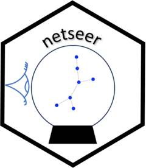

Generates a bigger graph by linear growth.
generate_graph_linear.RdGenerates a bigger graph using parameters for node and edge growth. If a sequence of graphs are created, the number of nodes would linearly increase.
Usage
generate_graph_linear(
gr = NULL,
del_edge = 1,
new_nodes = 1,
edge_increase = 1,
edges_per_new_node = 3
)Arguments
- gr
The input graph to generate the next graph. If set to
NULLa graph usingigraph::sample_pais used as the input graph.- del_edge
The number of edges deleted from the input graph. Default set to
1.- new_nodes
The number of nodes added to the input graph. Default set to
1.- edge_increase
The number of edges added to the input graph. Default set to
1.- edges_per_new_node
The number of edges added to the new nodes. Default set to
3.
Examples
set.seed(1)
gr <- generate_graph_linear()
gr
#> IGRAPH ca09825 U--- 11 12 -- Barabasi graph
#> + attr: name (g/c), power (g/n), m (g/n), zero.appeal (g/n), algorithm
#> | (g/c)
#> + edges from ca09825:
#> [1] 1-- 2 1-- 4 1-- 7 1--11 2-- 3 2-- 5 2-- 6 5-- 6 5--11 6--10 7-- 8 8-- 9